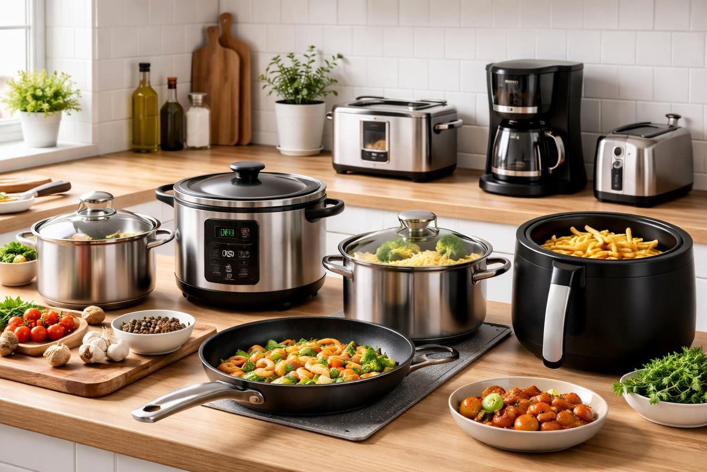

Rekomendasi Peralatan Dapur Modern Produksi Lokal
Berikut adalah rekomendasi 5 brand peralatan dapur modern produksi lokal Indonesia. Pilihlah peralatan dapur yang sesuai untuk memenuhi kebutuhan Anda, dan hindari membeli peralatan dapur yang tidak berguna.

1. Maspion
Brand legendaris asal Indonesia ini sudah sangat dikenal luas. Maspion menghadirkan berbagai peralatan dapur modern seperti panci stainless, rice cooker, hingga alat masak listrik. Keunggulannya terletak pada kualitasnya yang awet serta harga yang relatif terjangkau, sehingga cocok untuk kebutuhan rumah tangga sehari-hari.
2. Oxone
Oxone dikenal dengan desainnya yang elegan dan modern. Produknya mencakup alat masak set, oven listrik, blender, hingga peralatan kue dan roti. Brand ini sering menjadi pilihan bagi Anda yang ingin tampilan dapur lebih stylish tanpa mengesampingkan fungsi.
3. Miyako
Miyako merupakan salah satu brand lokal yang fokus pada peralatan dapur elektronik, seperti rice cooker, dispenser, dan kompor listrik. Produk-produknya terkenal hemat listrik, praktis, dan mudah digunakan, sehingga banyak diminati oleh keluarga Indonesia.
4. Cosmos
Cosmos menawarkan berbagai inovasi peralatan dapur modern seperti air fryer (sejenis alat masak modern dengan sedikit minyak), blender, dan magicom. Brand ini dikenal dengan teknologi yang terus berkembang serta fitur-fitur yang memudahkan aktivitas memasak di dapur.
5. Kirin
Kirin menghadirkan peralatan dapur yang praktis dan ekonomis, seperti kompor gas portable, rice cooker, dan alat pemanas air. Produk-produk Kirin cocok bagi Anda yang mencari solusi sederhana namun tetap fungsional.
👉 Memilih peralatan dapur brand lokal tidak hanya membantu memenuhi kebutuhan rumah tangga, tetapi juga turut mendukung industri dalam negeri. Selain itu, kualitas produk lokal saat ini semakin berkembang dan mampu bersaing dengan produk luar.
Namun, menghindari barang mewah dan hidup dalam kesederhanaan masih sangat dianjurkan dalam ajaran Islam. Belilah seperlunya saja (yang tidak mewah) dengan alasan kualitas dan menghindari produk berkualitas rendah namun dengan harga yang sangat tinggi. Kita semua tahu bahwa kualitas yang bagus selalu berada di brand-brand terkenal dengan harga yang lebih tinggi.
Wallahu a'lam.